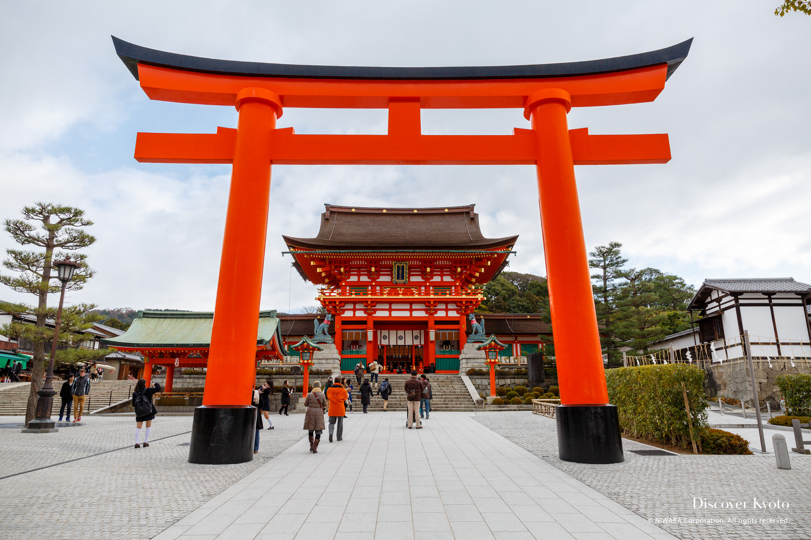
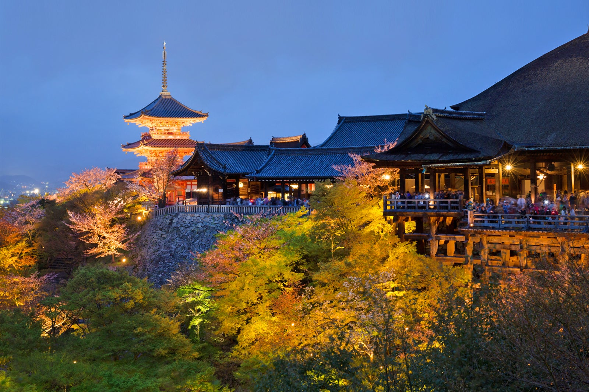

MORNINGWalk through Fushimi Inari
Arrive before the crowds and take the quieter upper trail.
Tell Roamwise what kind of journey you want. Get a complete, adaptable itinerary in minutes.
Roamwise considers distance, opening hours, weather, budget and how you actually like to travel.

Arrive before the crowds and take the quieter upper trail.
A small restaurant chosen around your preferences.

Traditional tea followed by sunset views.
7 days · from CHF 1,480
5 days · from CHF 890
4 days · from CHF 2,190
Plans reshuffle around delays, weather or a change of mind.
See the full cost clearly and choose where to save or spend.
Keep flights, stays and experiences inside the same trip.
Recommendations shaped by timing, neighbourhood and taste.
Lisbon2 nights
Comporta2 nights
Porto3 nights
Roamwise gave us the kind of trip we normally spend weeks piecing together—without making it feel generic.Clara & JonasLausanne · Portugal trip
4.9average rating
68ktrips created
92countries covered
This is an interactive demo — type a destination and see how the planner would feel.
This site was designed and coded from scratch — no templates, no page builders, no frameworks. If you need a high-quality web product for your startup, brand or idea, I'm available for projects.